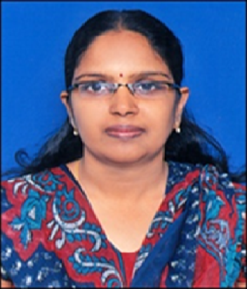

FacultyK. Ashwini
Assistant Professor · Interdisciplinary Faculty (Mechanical Engineering)
Key Highlights
Profile
Ms. K. Ashwini is serving as an Assistant Professor in Mechanical Engineering as an Interdisciplinary Faculty at the University College of Engineering and Technology, Mahatma Gandhi University, Nalgonda, since 20 November 2013.
She completed her B.Tech in Mechanical Engineering from JNTU Hyderabad in 2002 and earned her M.Tech in CAD/CAM from Sri Krishnadevaraya University, Anantapur, in 2005. She is currently pursuing her Ph.D. at Kakatiya University, Warangal.
With 10 years of teaching experience, she has actively contributed to engineering education and academic administration. She has participated in workshops on SolidWorks conducted at JNTUH and Faculty Development Programmes organized through MHRD (NPTEL).
She has served in several important academic and administrative roles, including Examination Branch In-charge and Head of Department. She is also involved in various institutional committees such as Admissions, Cultural Activities, and Career Guidance Cell.
She has served as a Technical Expert for numerous technical festivals organized by Government Polytechnic, Nalgonda, under the State Board of Technical Education.
Academic & Administrative Contributions
Area of Specialization
Assistant Professor
Interdisciplinary Faculty – Mechanical Engineering
University College of Engineering and Technology
Mahatma Gandhi University, Nalgonda
asu_1480@yahoo.co.in